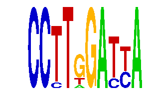

family_22 |
|---|
|  |
| Download PWM |
| Download instances (motifs) |
| Show motif distribution |
Query_ID | Query_Consensus | Subject_Name | Source_DB | Subject_ID | Length | Orientation | Offset | Divergence | Overlap | Subject_Consensus |
|---|---|---|---|---|---|---|---|---|---|---|
| family_22 | CCTTGGATTA | ESRRA | JASPAR | MA0592.1 | 11 | reverse-complement | -5 | 0.546 | 6 | CCAAGGTCACN |
| family_22 | CCTTGGATTA | NR1H2::RXRA | JASPAR | MA0115.1 | 17 | reverse-complement | -12 | 0.594 | 5 | AAAGGTCAAAGGTCAAC |
| family_22 | CCTTGGATTA | ARID3A | JASPAR | MA0151.1 | 6 | as given | 6 | 0.685 | 4 | ATTAAA |
| family_22 | CCTTGGATTA | PPARA | HOCOMOCO | PPARA_HUMAN.H10MO.S | 7 | reverse-complement | -3 | 0.809 | 4 | RAGGTCA |
| family_22 | CCTTGGATTA | NR4A2 | HOCOMOCO | NR4A2_HUMAN.H10MO.C | 9 | reverse-complement | -4 | 0.857 | 5 | AAAGGTCAN |
Sequence | Start_position (from start) | Start_position (from end) | Average conservation | Best conservation score | Instance_with_best_CS | Best_Z-score | Instance_with_best_ZS | Strand |
|---|---|---|---|---|---|---|---|---|
| chr5:31864700-31868100 | 408 | 418 | 0.073 | 0.272 | CCYTGGATYA | 12.745697 | CCTTGGAYYA | 1 |
| chr12:104600200-104602100 | 667 | 677 | 0.0021 | 0.009 | CCTTGGAYYA | 12.745697 | CCTTKGATYA | 1 |
| chr8:46727800-46730539 | 427 | 437 | 0.9322 | 0.957 | CCYTGGATYA | 14.437937 | CCYTGGATYA | 1 |
| chr17:81910094-81911100 | 737 | 747 | 0.001 | 0.002 | CCTTKGATYA | 12.745697 | CCTTGGAYYA | 1 |
| chr13:12128224-12131300 | 2224 | 2234 | 0.6552 | 0.879 | CCTTRGATYA | 12.745697 | CCTTRGATYA | 1 |
| chr1:43215700-43218157 | 1322 | 1332 | 0.0028 | 0.007 | CCYTGGATYA | 12.745697 | CCTTGGAYYA | 1 |
| chr17:13024600-13025800 | 1146 | 1156 | 0.016 | 0.043 | CCTTGGAYYA | 12.745697 | CCTTGGAYYA | -1 |
| chr2:90956900-90959121 | 978 | 988 | 0.0168 | 0.042 | CCTTGGAYYA | 12.745697 | CCTTGGAYYA | -1 |
| chr12:75042793-75043793 | 222 | 232 | 0.9982 | 1 | CCTTKGATYA | 12.745697 | CCTTKGATYA | 1 |
| chr18:11044131-11045131 | 436 | 446 | 0.0094 | 0.071 | CCTTGGAYYA | 12.745697 | CCTTGGAYYA | 1 |
| chr8:13242700-13244900 | 1094 | 1104 | 0.0087 | 0.01 | CCYTGGATYA | 14.437937 | CCYTGGATYA | 1 |
| chr9:24552858-24553858 | 952 | 962 | 0.0094 | 0.03 | CCTTGGAYYA | 14.437937 | CCYTGGATYA | 1 |
| chr13:46544093-46545600 | 1041 | 1051 | 0.1733 | 0.225 | CCTTKGATYA | 12.745697 | CCTTKGATYA | 1 |
| chr10:6916200-6918616 | 352 | 362 | 0.0111 | 0.022 | CCYTGGATYA | 12.745697 | CCTTGGAYYA | 1 |
| chr2:68211591-68213000 | 182 | 192 | 0.0055 | 0.028 | CCTTGGAYYA | 12.745697 | CCTTGGAYYA | 1 |
| chr14:55598385-55599400 | 597 | 607 | 0.0004 | 0.001 | CCTTKGATYA | 12.745697 | CCTTGGAYYA | 1 |
| chr9:24772900-24774281 | 1341 | 1351 | 0.0014 | 0.003 | CCTTKGATYA | 12.745697 | CCTTKGATYA | -1 |
| chr17:69517668-69519700 | 350 | 360 | 0.632 | 0.637 | CCTTRGATYA | 12.745697 | CCTTRGATYA | 1 |